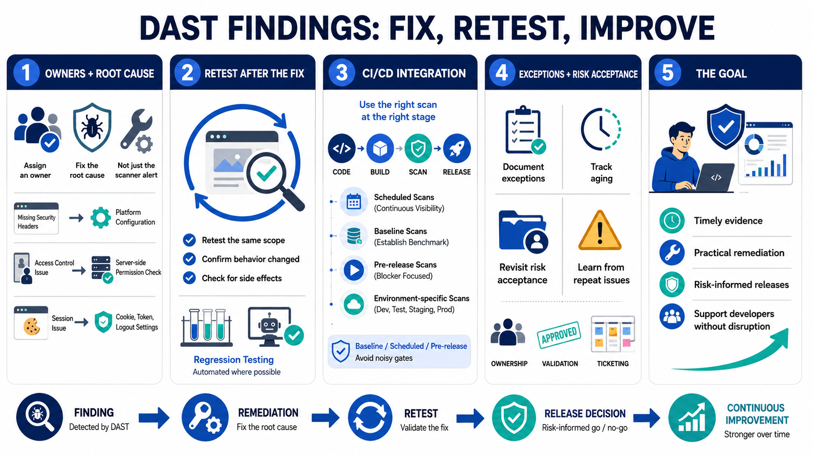

Remediation, Validation, and Pipeline Integration
Connecting to LMS... Progress: in progress

Narration
DAST findings need owners, remediation guidance, and validation. The fix should address the root cause, not merely silence the scanner. A security header gap may require platform configuration. An access control issue may require server-side permission checks. A session problem may require changes to cookie settings, token handling, or logout behavior. Good guidance explains expected secure behavior and how to verify it.
Retesting after remediation confirms that the issue was actually fixed and that runtime behavior changed as expected. Retesting should use the same scope and comparable conditions when practical, but it should also consider whether the fix created new behavior elsewhere. Security regression testing can help prevent recurring issues by adding checks to automated tests, release criteria, or future scan profiles.
DAST can be integrated into CI/CD and release decisions, but it should be done carefully. Scheduled scans, baseline scans, pre-release scans, and environment-specific scans each serve different purposes. Release gates and severity thresholds can help prevent high-risk issues from shipping, but noisy unreviewed gates can train teams to ignore results or seek exceptions without fixing problems.
Exception workflows and risk acceptance should be documented, owned, and revisited. Tracking unresolved findings, aging, validation status, and recurring root causes turns DAST into an improvement program rather than a report factory. The goal is developer workflow support: timely evidence, practical remediation, and risk-informed release decisions without unnecessary disruption.